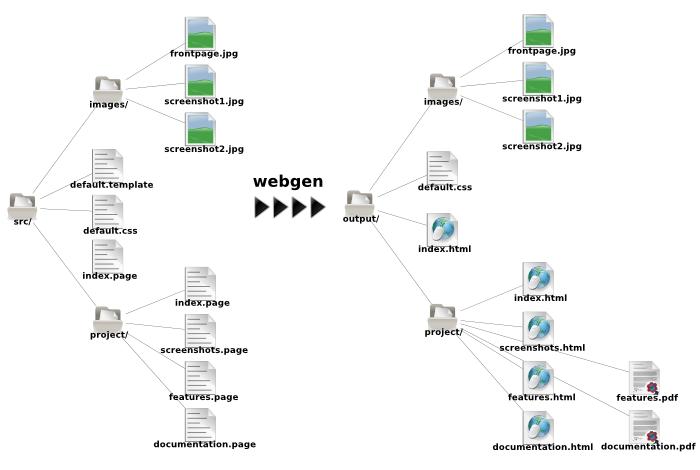

webgen / static website generator
static website generation made easy!
Sub Menu
Tips
- The basics pagecontains everything one needs to get going with webgen!
- Descriptions for plugins can be found in the plugins section
Latest news
2007-12-31: Minor release with feature enhancements. More...
2007-09-08: Small bug fix release. More...
2007-06-29: Some bug fixes and one small feature enhancement. More...
Links

General Information
| Plugin name: | Core/FileHandler |
|---|---|
| Author: | Thomas Leitner <t_leitner@gmx.at> |
| Summary: | Main plugin for handling the files in the source directory |
| Dependencies: | Core/Configuration |
| Parameters: | defaultMetaInfo: {} ignorePaths: ["**/CVS{/**/**,/}"] useHiddenFiles: false |
Description
The FileHandler plugin is one of the two main workhorses, the other being the Core/TagProcessor. When running webgen the FileHandler is responsible for traversing the source directory and creating the internal representation of all handled files as well as writing the output files by using the individual file handler plugins. These file handler plugins reside in the File namespace. Also, the FileHandler is responsible for managing the meta information backing file.
There are many different file handler plugins available, ranging from very simple ones, like copying a file verbatim from the source to the output directory, to complicated ones, like creating HTML files from page files or creating whole image galleries from a simple gallery defintion file!
The following sections give an overview of how the file handling is done by webgen, how path patterns work and how to specify and use meta information.
Handling of files in the source directory
Following is the list of rules how files in the source directory are handled by webgen:
- All file/directory names in the source directory are fetched (actually, only those file/directory
names without a leading dot unless useHiddenFiles is set to
true) - Those files which match an ignorePaths pattern are excluded
- The path patterns for each file handler plugin are matched against the remaining files and all matching files are then handled by the file handler plugin
You should not use one of the following characters in file or directory names:
; / ? : @ & = + $ ,If you do use one of them webgen may not work correctly!
As you might have deduced from the processing list above, it is possible that one file/directory is handled by multiple file handler plugins. This can be used, for example, to render an XML file as HTML and copy it verbatim.
Internally a tree structure is created reflecting the source directory hierarchy and each file that will be created by webgen is represented by a node in the tree, as displayed in the following in image.

The source directory layout is shown on the left side and the internal tree structure/output layout
on the right. As you can see, some files are copied verbatim (e.g. the images), others are copied
not all (e.g. default.template) and still others have multiple output files (e.g.
project/documentation.page).
Path Patterns
Each file handler plugin specifies path patterns which are used to locate the files that the plugin can handle. Normally these patterns are used to match file extensions, however, they are much more powerful. For detailed information have a look at Dir.glob .
The path patterns that are handled by a particular file handler plugin are stated on its
documentation page and cannot be changed for most plugins, eg. the File/PageHandler will
always handle .page files. However, the information about how these path patterns work are useful
for the usage of webgen because of two reasons:
- so that the user knows which files will be processed by a specific file handler plugin
- so that the user can specify path patterns for some special file handler plugins that support additional path patterns, like the File/CopyHandler.
Here are some example path patterns:
| Path Pattern | Result |
|---|---|
*/*.html |
All files with the extension html in the subdirectories of the source directory |
**/*.html |
All files with the extension html in all directories |
**/{foo,bar}* |
All files in all directories which start with foo or bar |
**/??? |
All files in all directories whose file name is exactly three characters long |
File Meta Information
Each file can have meta information, i.e. information about the file itself, associated with it, for example the title of the file, if it should appear in a menu and so on. Some file types allow this meta information to be specified directly in the file, e.g. page files. However, meta information can also be specified in the meta information backing file.
The defaultMetaInfo parameter
This parameter can be used to override the default meta information set for a file handler plugin. The keys are the names of file handler plugins and the values are the meta information. You can either set the parameter directly or use the special functionality provided by the configuration file to set it for a file handler plugin.
The meta information backing file
The meta information backing file contains meta information about files/directories in the source directory. It has two sections both of which have to be in YAML format and both have to have the same structure: a source backing section and an output backing section which is optional.
The source backing section is used to apply meta information to a file before a node for this file is created. A file handler plugin can therefore use this meta information during the creation of the node. Make sure that you use a valid source path, i.e. a path that resolves to a file in the source directory!
The output backing section is used to apply meta information after all nodes have been created and to create so called “virtual nodes”. The paths specified in the output backing section have to be valid output path, not source paths! If a specified path resolves to an already created node, the meta information is applied to this node. Otherwise, a virtual node is created with the specified meta information and empty content – a virtual node never creates a real output file! This facility can be used, for example, to include links to external web pages in menus or to create the a whole menu with custom sections and multiple reference in different sections to the same node!
Following is a sample meta information backing file with explanations afterwards:
index.page: inMenu: true orderInfo: 2 images: indexFile: ~ --- index.page: inMenu: false wiki.html: title: Link to wiki url: http://myhost.com/path/to/my/wiki inMenu: true orderInfo: 5 api.html: title: API Reference url: http://myhost.com/api virtdir/: indexFile: index.html virtdir/index.html: title: A virtual index file inMenu: true url: /index.page virtdir/other.html: inMenu: true url: /otherdir/linked.de.page
The above sample meta information backing file consists of both sections: the mandatory source section and the optional output section. As you can see each section is described using a hash of hashes, i.e. the keys are paths and the values are the meta information hashes.
The source section specifies additional meta information for the index.page file and for the
images directory: the index.page gets the inMenu and orderInfo meta information set and it
is specified that the images directory has no indexFile.
The output section is more interesting than the source section:
- The first entry references an existing file, therefore the meta information for that file
(
index.page) is set appropriately. - The second entry specifies that under the
rootdirectory a virtual node with the pathwiki.htmlshould be created (the node will be virtual as the path references no existing file). It should have the specified title and should be in the menu with the specified order. Furthermore, a special*url*key is used. This key can only be used for virtual file nodes (not directory nodes) in the output section and it specifies the link target for the node. So, whenever a reference towiki.htmlis requested the resolvedurlis returned. Thisurlcan be a link to an outside page or it can refer to another node, as described below. Theurlis assumed to be relative to the directory the virutal node is in. - The third entry also specifies a virtual node linking to an external page, but one which will not appear in a menu. Such nodes are normally inserted into the output section so that the Tag/Relocatable can be used.
- The last three entries add virtual entries to the menu to show how one page can appear in more
than one directory: the
virtdir/index.htmllinks to the top levelindex.pageandvirtdir/other.htmllinks to a page in another subdirectory, namely/otherdir/linked.de.page.
Processing order
There is clearly defined order in which meta information is applied to a node for a file:
- The default meta information for a node is specified via a directive in the plugin file handler that creates the node (this means that it is possible that no default meta information is specified). If such a default meta information is set for a plugin file handler it is shown on its plugin documentation page.
- Overridden by values that are set for the plugin file handler for the node in the defaultMetaInfo parameter.
- Overridden by the meta information specified for the file in the source backing section of the meta information backing file.
- Now the node is created by the file handler plugin with this meta information. During the node creation, it is possible that the meta information is overridden by meta information extracted from the file by the file handler plugin (e.g. the File/PageHandler parses the file name to extract meta information like the title of the node and uses the meta information specified in the file itself).
- After all nodes are created, meta information specified in the output backing section of the meta file backing file is applied.